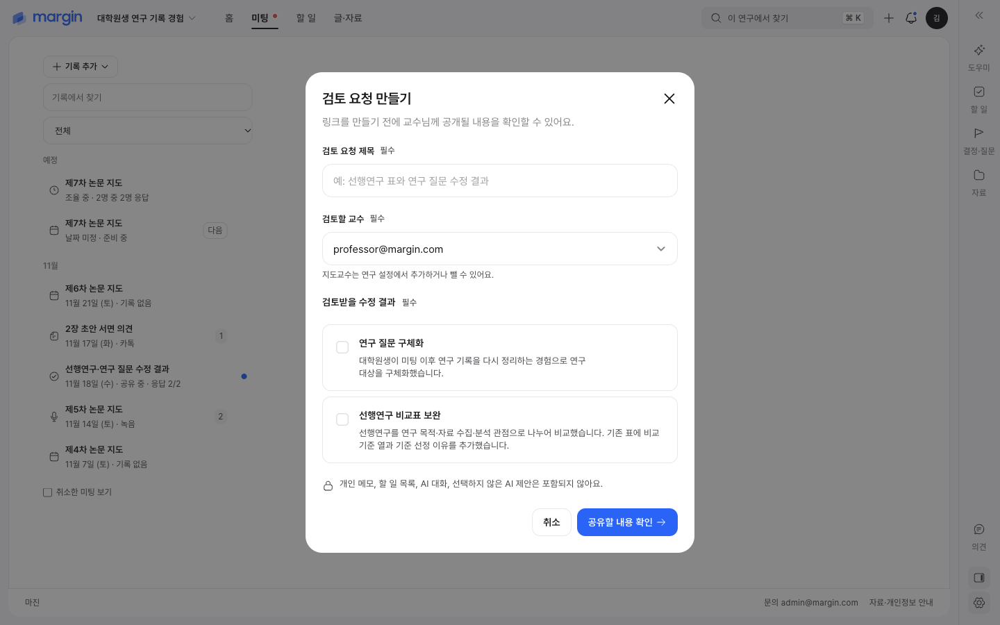
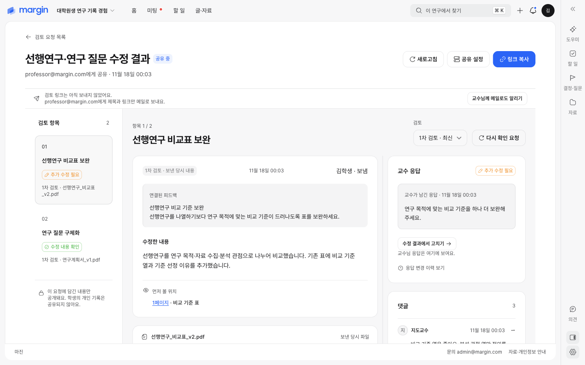
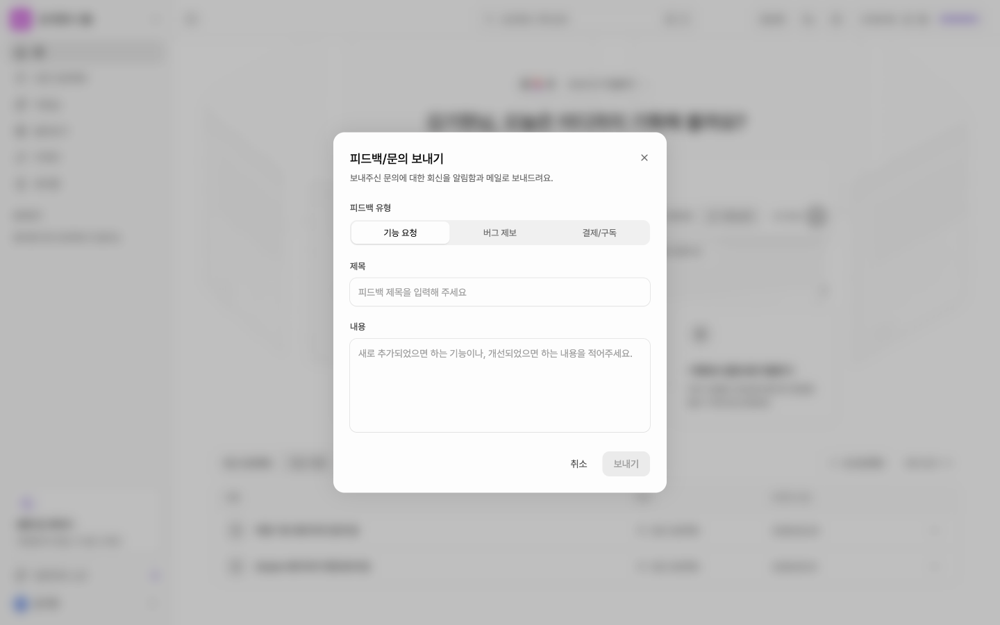
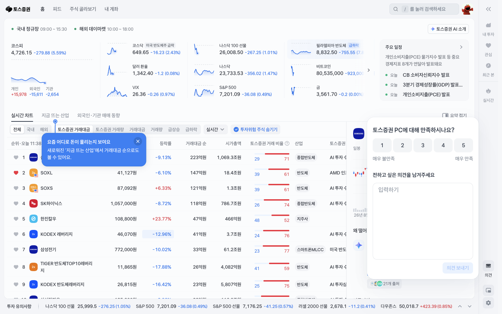

교수님께 보내기는 버튼 하나예요
어느 화면에서든 맨 위 교수님께 보내기를 누르면 같은 창이 떠요. 보낼 것은 미리 골라져 있고, 한마디도 도우미가 먼저 써 둬요. 교수님은 받은 링크에서 바로 읽고 답해요.


2.3 선행연구 비교 기준
선행연구는 연구 목적, 자료 수집 방식, 분석 관점에 따라 서로 다른 결론에 이른다. 본 연구는 비교 기준을 연구 목적·자료·분석 관점의 세 가지로 정하고, 각 기준을 고른 이유를 표 2-1에 정리하였다.
표 2-1의 연구는 2015년부터 2022년 사이에 발표된 것으로, [교수님 메모: 최근 연구가 비어 있어요] 국내 대학원생을 대상으로 한 질적 연구를 중심으로 골랐다.
… (이하 생략)
제목을 직접 쓰고, 교수를 고르고, '검토받을 수정 결과'를 미리 따로 만들어 둬야 보낼 수 있어요. '수정 결과', '공유할 내용 확인' 같은 말이 낯설어요. 그다음 화면에서 또 '링크 복사'와 '메일로도 알리기'를 눌러야 실제로 가요.
새로고침·공유 설정·링크 복사·다시 확인 요청 버튼, 검토 항목, 교수 응답, 응답 변경 이력, 댓글이 한 화면에 있어요. 교수님이 봤는지, 답했는지가 한눈에 안 보여요.
받는 사람은 지도교수로 정해져 있고, 보낼 것(최근 고친 원고, 여쭤볼 것)은 다음 미팅에 맞춰 미리 체크돼 있어요. 한마디는 도우미가 먼저 써 두고, 나는 고치기만 해요. 메일로 보내거나 카톡에 붙일 링크를 복사해요.
검토 요청 제목 쓰기, '수정 결과'를 따로 만드는 단계, '공유할 내용 확인' 다음 단계, 보낸 뒤 '메일로도 알리기'를 또 누르는 것.
홈 맨 위에 '보냄 → 열어 보심 → 답장' 세 칸이 보여요. 답장이 오면 미팅 후 화면처럼 할 일로 나눠서 보여 줘요.
링크를 열면 원고(바뀐 곳은 노란색)와 학생의 한마디, 여쭤본 것이 보여요. 질문에는 '네, 좋아요' 한 번으로 답하고, 원고 문장에 바로 메모를 남기거나 지금처럼 빨간 글씨 한글 파일을 올려도 돼요.
교수님이 로그인 없이 링크로 볼 수 있게 할지(지금은 링크를 열면 로그인 화면으로 가요. 교수님도 계정이 있어야 해요). 편하지만 링크가 퍼지면 누구나 볼 수 있어서, 기간 제한이나 이메일 확인 같은 장치가 필요해요.
설명용 가상 데이터예요. 원고 문장, 교수님 메모, 시각은 예시로 지은 것이에요.
참고한 화면

